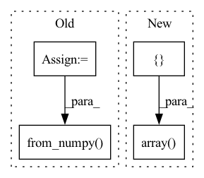

Pattern ID :27884

Before Change
file_name = dataset.imgs[dataset.image_ids[item]]["file_name"]
sample = dataset.__getitem__(item)
keypoints3D = sample[1]
imgs_orig = sample[0]
img_size = imgs_orig[0].shape
dataset_name = sample[-1]
reproTool = reproTools[dataset_name]
num_cameras = imgs_orig.shape[0]
imgs = torch.from_numpy(imgs_orig).cuda().float().permute(0,3,1,2)
points3D_net = jarvisPredictor(imgs, reproTool.cameraMatrices.cuda(), reproTool.intrinsicMatrices.cuda(), reproTool.distortionCoefficients.cuda())
After Change
pointsNet = []
pointsGT = []
filenames = []
data_generator = DataLoader(
dataset,
batch_size = 1,
shuffle = False,
num_workers = cfg.DATALOADER_NUM_WORKERS,
pin_memory = True)
for item, sample in enumerate(tqdm(data_generator)):
if progress_bar != None:
progress_bar.progress(float(item+1)/len(dataset.image_ids))
keypoints3D = sample[1][0].numpy()
imgs_orig = sample[0][0]
img_size = imgs_orig[0].shape
num_cameras = imgs_orig.shape[0]
dataset_name = sample[-2][0]
reproTool = reproTools[dataset_name]
file_name = sample[-1][0]
imgs = imgs_orig.cuda().float().permute(0,3,1,2)
points3D_net = jarvisPredictor(imgs,
reproTool.cameraMatrices.cuda(),
reproTool.intrinsicMatrices.cuda(),
reproTool.distortionCoefficients.cuda())
if points3D_net != None:
points3D_net = points3D_net[0].cpu().detach().numpy()
pointsNet.append(points3D_net)
pointsGT.append(keypoints3D)
filenames.append(file_name)
print (f"{CLIColors.OKGREEN}Successfully analysed all validation "
f"frames!{CLIColors.ENDC}")
if len(pointsNet) != len(dataset.image_ids):
print (f"{CLIColors.WARNING}Network could not detect instance in "
f"{len(dataset.image_ids) - len(pointsNet)} frameSets. "
f"Those were not included in the output "
f"files!{CLIColors.ENDC}")
savetxt(os.path.join(output_dir, "frame_names.csv"),
np.array(filenames), delimiter=",", fmt="%s")
savetxt(os.path.join(output_dir, "points_HybridNet.csv"),
np.array(pointsNet).reshape(
In pattern: SUPERPATTERN
Frequency: 3
Non-data size: 4
Instances
Fragment ID: 82811628
Project Name: jarvis-mocap/jarvis-hybridnet
Commit Name: 327b43a36cc8aa4995c6e50842b02f3577a1e241
Time: 2022-04-28
Author: jarvismocap@gmail.com
File Name: jarvis/analysis/analyze.py
M Class Name: AnonimousClass
N Class Name: AnonimousClass
M Method Name: analyze_validation_data(5)
N Method Name: analyze_validation_data(5)
M Parent Class:
N Parent Class:
M File Name: jarvis/analysis/analyze.py
N File Name: jarvis/analysis/analyze.py
M Start Line: 28
M End Line: 52
N Start Line: 22
N End Line: 82
'>
Before Change
cx = self.H / 2
cy = self.W / 2
self.intrinsic = np.eye(3, dtype=np.float32)
self.intrinsic[0, 0] = fl_x
self.intrinsic[1, 1] = fl_y
self.intrinsic[0, 2] = cx
self.intrinsic[1, 2] = cy
// preload
self.intrinsic = torch.from_numpy(self.intrinsic).cuda()
self.generate_poses()
def __len__(self):
After Change
fl_x = fl_y
cx = self.H / 2
cy = self.W / 2
self.intrinsics = np.array([fl_x, fl_y, cx, cy])
def collate(self, index):
'>
Fragment ID: 82811627
Project Name: ashawkey/dreamfields-torch
Commit Name: 118106fd46e2503e1d1d01fe0b0b17d8d6059a01
Time: 2022-05-15
Author: ashawkey1999@gmail.com
File Name: nerf/provider.py
M Class Name: NeRFDataset
N Class Name: NeRFDataset
M Method Name: __init__(9)
N Method Name: __init__(7)
M Parent Class:
N Parent Class: Dataset
M File Name: nerf/provider.py
N File Name: nerf/provider.py
M Start Line: 81
M End Line: 105
N Start Line: 108
N End Line: 129
'>
Before Change
if self.split != "test":
batch["label_valence"] = torch.from_numpy(labels[..., 0])
// discretize valence into categories
bins = np.linspace(-1, 1, 4, endpoint=False)
class_labels = np.digitize(labels[..., 0], bins) - 1
batch["class_valence"] = torch.from_numpy(class_labels)
batch["label_arousal"] = torch.from_numpy(labels[..., 1])
return batch
After Change
expr_labels = self.labels_expr[vid_name][start_frame: start_frame + track_len]
else:
expr_labels = np.zeros(track_len, dtype=np.int64)
expr_valid = np.array([has_expr] * track_len) & (expr_labels >= 0)
// pad with boundary values, which will be discarded for evaluation
to_pad = self.window_len - track_len
if to_pad != 0:
'>
Fragment ID: 82811633
Project Name: sailordiary/m3f.pytorch
Commit Name: a576188eaa852121b4277b8a4553ded796eadeb9
Time: 2020-02-03
Author: me@sailorzhang.com
File Name: models/dataset.py
M Class Name: AffWild2SequenceDataset
N Class Name: AffWild2SequenceDataset
M Method Name: __getitem__(2)
N Method Name: __getitem__(2)
M Parent Class: Dataset
N Parent Class: Dataset
M File Name: models/dataset.py
N File Name: models/dataset.py
M Start Line: 213
M End Line: 243
N Start Line: 199
N End Line: 255